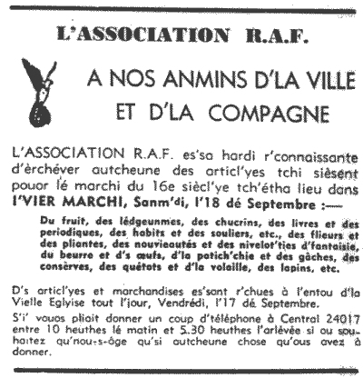
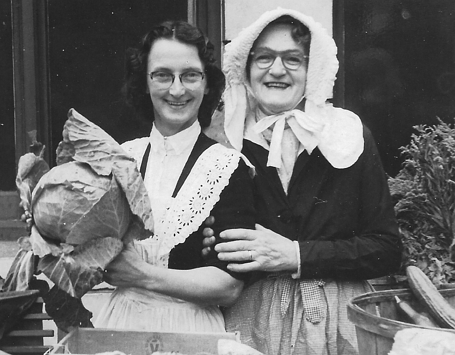

Moussieu l'Editeu,
Moussieu l'Editeu,
Quand j'entendîmes y'a tchiques jours que l'Crieux Public tait v'nu à Saint-Ou pour procliâmé l'grand jour dans la Place Royale, la Merrienne fut toute întérêssie, et, pour dithe vrai, mé étout.
"Y faut aidgi autant comme je pouvons," ou s'fit, "car, jamais y ne s'sa dit qu'Saint-Ou tait drièthe la porte quand y tait tchestchon d'supporté une bounne cause."
"Nou n'pouorrait jamais en trouvé une muyeuthe," j'm'accordit," car si chais braves garçons n'avaient pas donné lûs vie quand l'maufait Hitler tâchit d'envahit l'Angliéterre, seux et certain que l's'Allemands s'saient ocquo ichin. Y'avait au mains trais ou quatre machine tch'avaient crouaisi la mé et tchi taient en train d'prendre Londres, contre yunne des notres, mais j'eûmes la victouaithe quand-même, et l'pays fut sauvé. Toute honneur à nos braves garçons; nou n'les r'oubliètha jamais."
"Nan," ou dit, "et ach'teu tch'il est tchéstchon d'aidgi à lus dépendants, y faut qu'Jêrri faiche san d'vé. Quant à nous ichin y'a hardi d'chose que j'pouvons êpeigni pour porté en ville. A qu'menchi y'a des lédgumes. Nou peu donné des patates, d'la caboche, des cârottes et tout l'restant, épis, sans doute, tchiques poumes et un mio d'beurre, sans pâslé d'une doûzaine d'oeufs s'sont acceptablyes."
"Vèthe, sans doute," j'l'y dit, "mais ch'n'est pas tout. Y'a deus-trais poules et pouléttes tchi peuvent allé étout. J'n'ai pas de p'tits animaux, malheutheusement, car la vieille a ocquo trais s'maines à allé, et le pt'it viaud n'a qu'trais jours et a d'la peine à s't'nin sûs ses gambes, épis n'y'éthait pas d'lait pour l'y dans l'Vier Marchi. Mais un couplye d'lapins pouorraient faithe."

"D'main au matin, j'éthons l'temps d'allé vais si j'pouvons trouvé tchique autre chose," ou dit. "Mais ach'teu, comment transporté tout chonna en ville. Le van ne s'teint pas d'but, et chonna pathaitrait drôle de cachi en ville avec un hérnais."
"Quant à chonna," j'l'y dit, "j'ai ramonté la Rue d'Drièthe bein des fais dans un hérnais, avec man pèthe, dans la saison du vraic. Mais y n'faut pas s'gèné, car je comprends tch'y sont prêts à v'nîn chérchi chein que l'monde veulent donné. Nous n'a qu'à téléfôné et un lorry arriv'tha."
"Bon," ou dit, "mais ach'teu tchèsque j'allons faithe té et mé, Sam'di? Tu n'as pas dans l'idée, j'espèthe que j'n'allons pas bouogi d'ichîn tout l'jour, car quant à mé j'm'y'en vais, quand j'éthais à marchi tout l'long du qu'min."
"J'prendrons une bus de bouonne heuthe," j'l'y dit. "J'voudrais être là en temps pour vais Moussieu l'Bailli ouvri l'Vier Marchi. Chais pour djais heuthes, et y n'étha pas grand temps, car y faut tch'y siége à la Cour bein vite après. Nou m'dit que l'Crieur Public est pour être là, avec sa clioche et ses Oyez! Oyez! Oyez! et qu'y'étha hardi des viers costumes du temps pâssé parmi les vendeurs."

"Tchi dommage que je n'savais pas chonna en temps," ou dit, "car j'éthas peut mettre la robe de ma grand'tante Betsey, et l'vier bonnet Jêrriais qu'les femmes méttaient quand ils allaient traithe les vaques à la têrrée en été."
"Tu peux l'faithe ocquo," j'l'y dit, "quand qu'tu îthas accaté ichin et là dans les stâlles. N'oublie pas, tu sais, tchi faudra apporté tchiques sous."
"Bein seux," ou dit. "Je n'm'en vais pas là sans dêpensé chein que j'peux êpeigni. Heutheusement, grâce à la bouonne saison d'patates, y'a ocquo tchiques hérpins dans la cauche."
"J'ai tchiquefais voulu qu'tu m'éthais dit ouèsque tu la muche, chutte cauche," je m'fit. "Mais y'a une chose, Merrienne, crais-tu qu'y'étha yunne ou deux bârriques de cidre dans l'Vier Marchi. Il est vrai que ch'n'est pas la saison, mais, avec chonna, une goutte de cidre est tréjous rafraichissante."
"Nânin, n'y'étha pas d'cidre," ou dit, "mais sans doute y'étha d'la limonade. Chonna t'rafraichissa bein mûs qu'du cidre."
Oh, Moussieu l'Editeu, que les femmes sont drôles!
Ph'lip
19/9/1953
Viyiz étout: